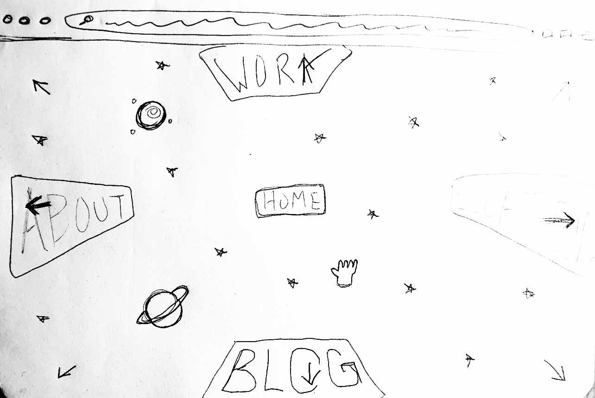

This reading response was inspired by the writing "The Web's Grain" by Frank Chimero. The reading talked about designing for web, and how people normally fall into approaching it from a gridded perspective. Frank went on to talk about photographer David Hockney and his development away from gridded photography over his artistic career. He then related it to web design. I decided for the website concept sketch that I would sketch out a spherical website that could be dragged or scrolled from any corner.
